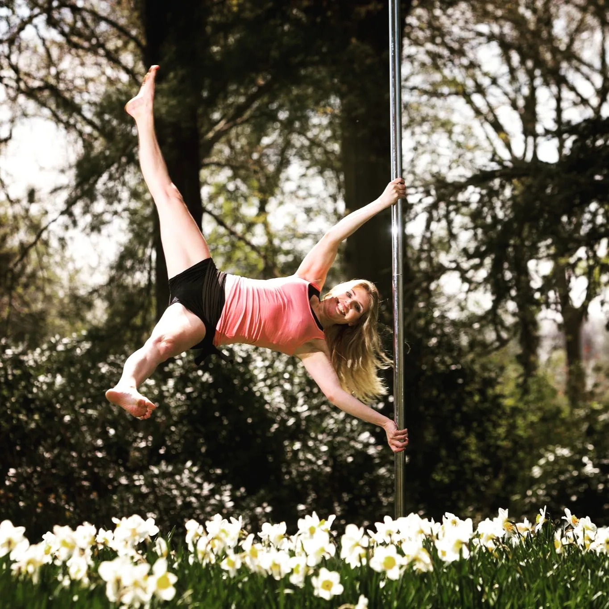
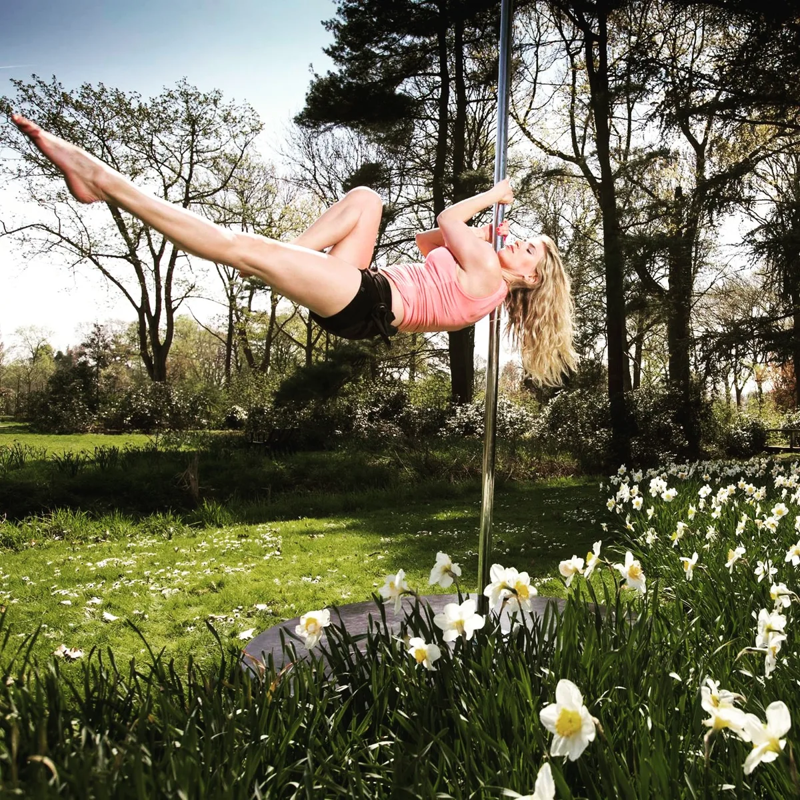
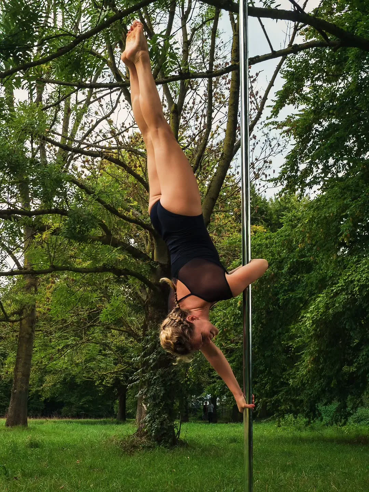
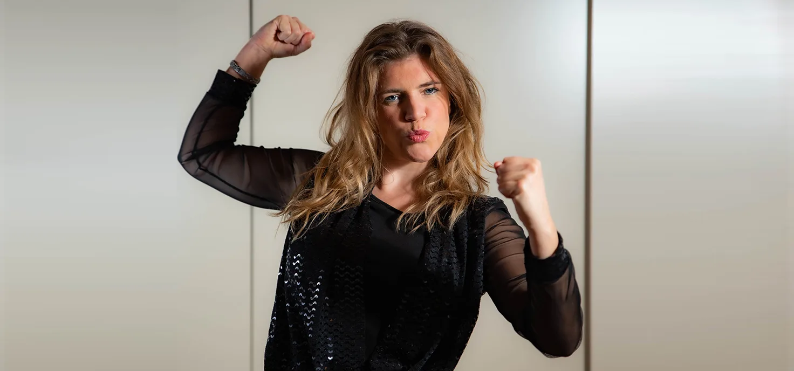
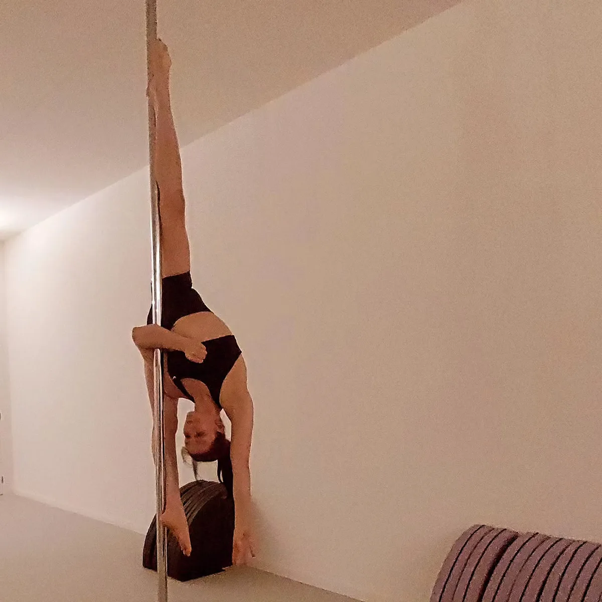
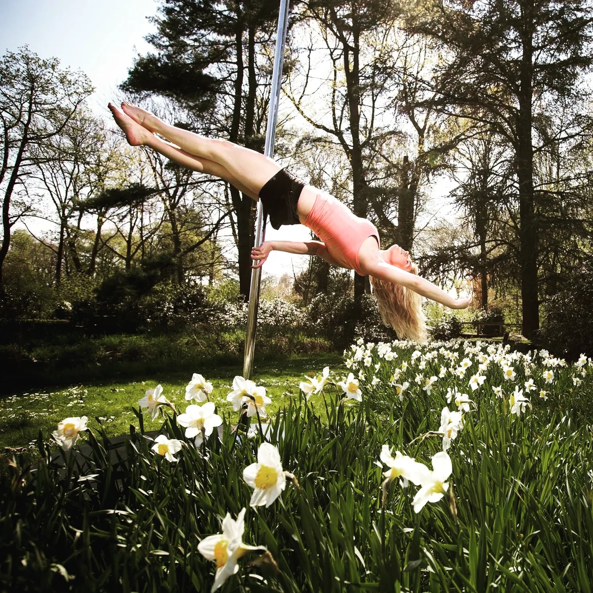
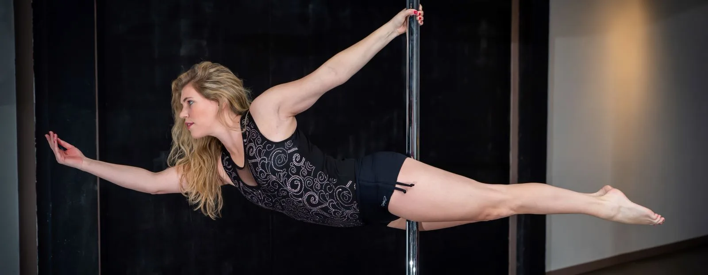

Proefles
Aan het begin van elke reeks. Zo voel je meteen of het iets voor jou is.
€ 14per proefles
Paalacro, paaldans, aerial yoga en aerial hoop bij Hanne in Hulsen. Sportief zijn hoeft niet: iedereen kan hier starten, jong en oud.

Je hele lichaam wordt sterker, je lenigheid groeit mee. En je traint je spieren op een manier die je nergens anders vindt.

PaalacroKracht en tricks aan de paal. Stap voor stap van je eerste spin naar een shouldermount.
Vloeiende bewegingen en overgangen op muziek, met gevoel, kracht en elegantie.
Figuren in een ring die in de lucht hangt. Een uitdagende workout voor kracht en zelfvertrouwen.
Yoga in een doek die je draagt. Rekken, hangen en loslaten.
Een duo-acrobatische sport. Alleen of met je partner, mannen en vrouwen welkom.
KinderenJeugd 12+Volwassenen Er is een groep voor elke leeftijd.
Elke reeks telt meestal 9 tot 12 lessen, in een vaste groep. Nieuw? Dan begin je met een proefles aan het begin van een reeks.
Het begin van het sportjaar, meteen na de zomervakantie.
Proeflessen in septemberGoede voornemens? Dan is dit je moment om eraan te beginnen.
Proeflessen in januariLichtere avonden, en de laatste reeks voor de zomer.
Proeflessen begin april
Voor de paal: een korte, aansluitende short en een topje zonder mouwen, op blote voeten. Je huid moet de paal kunnen vastnemen. Voor aerial hoop en acro yoga: een lange sportbroek, een shirtje en sokken.
Sportieve binnenschoenen voor de opwarming, een lange joggingbroek voor de cooldown, en een doekje om de paal of de hoop schoon te vegen.
Dat kan iedereen wel eens overkomen. De volgende les overlopen we wat je miste even kort. In de schoolvakanties zijn er geen lessen.


Dansen en acrobatie doet Hanne al sinds 2015. Sinds september staat er een volledig vernieuwde studio in Balen: een nieuw hoofdstuk, met dezelfde Hanne.
Het is nooit te druk in de les, dus Hanne ziet wat iedereen doet. Wie iets de eerste keer niet kan, krijgt een tip en probeert het de week erna opnieuw. Vaak lukt het dan wel.
Zelfs na een mindere dag ga je buiten met een glimlach, meer zelfvertrouwen en spieren waarvan je niet wist dat je ze had.Kiezie S · Google

Hanne is een super rustige toffe madame. Het les lokaal is zeer proper en er hangt een fijne aangename sfeer. (...) Ik heb me na de proefles direct ingeschreven!Joyce Groen · Google
Er hangt een fijne, ontspannen groepssfeer terwijl iedereen elkaar ondersteunt (met de nodige dosis humor af en toe). Echt een boost voor je zelfvertrouwen!Nathalie Van Hees · Google
Het maakt ook helemaal niet uit of je het van de eerste keer niet goed kan, ze blijft tips geven en de volgende les lukt het vaak al beter.tinne meulders · Google
Van zodra je hier binnenstapt, voel je je meer dan welkom. Een mooie ruimte waar je kan groeien als persoon en op ontdekking kan gaan in jezelf.Rien Taels · Google
Liever alleen of met z'n tweeën? Een feestje met je vriendinnen? Of een paal voor je eigen event? Het kan allemaal.

Aan het begin van elke reeks. Zo voel je meteen of het iets voor jou is.
Binnen of buiten, alleen of per twee. Het moment spreken we samen af.
Burlesque choreo, sportieve poledance of de vrouwelijke, sensuele versie. Voor dames en heren.
Een X-stage danspaal, aerial hoop of lollipop. Ophalen in Hulsen, levering en montage kan ook.
Stuur Hanne een berichtje met de les die je wil proberen. Twijfel je tussen paal en hoop, of tussen beginners en een andere groep? Dan zoeken jullie het samen uit.
Bergen 11a
2490 Balen (Hulsen)
Ik maakte deze demo voor jullie om te tonen wat er kan. Na een kort gesprek maak ik er iets veel persoonlijkers van, helemaal naar jullie wens.
Vrijblijvend. Ik kom langs of we bellen.
Op maat, op jullie eigen domein.
Geen voorschot. Jullie betalen pas als alles klaar is.
Hosting, domeinnaam en kleine wijzigingen, zoals nieuwe openingsuren.
Omdat een voorbeeld meer zegt dan een mail. Zo zien jullie meteen wat er kan, en het kost jullie niets.
Nee. Het gesprek is vrijblijvend. Vinden jullie het niks, dan is het daarmee gedaan.
Na ons gesprek staat jullie site binnen 10 tot 14 dagen online.
Zeker. Jullie domeinnaam kan gewoon blijven, de nieuwe site komt in de plaats van de oude.
Nee, dat doe ik op basis van ons gesprek. Eigen foto's zijn mooi meegenomen, maar niet nodig om te starten.